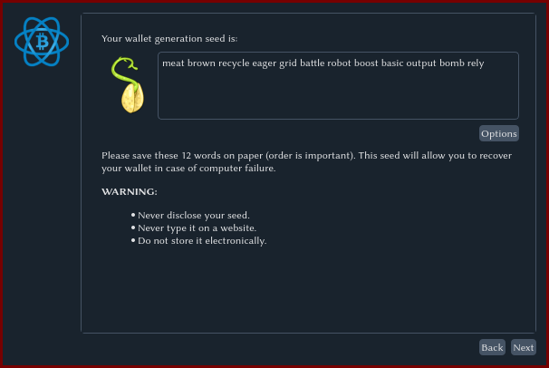

Let's now get a Bitcoin wallet and become able to receive Bitcoin funds or donations.
Wallets
One of the classical choices for a Bitcoin wallet is Electrum. Go to https://electrum.org to download and install it, or if you are a Linux user, it is probably included in your distribution's package repository.
Mobile version?
Note also that there are mobile/cell phone versions of Electrum for Android and iOS. I generally advise against using a wallet on a cell phone for security reasons, but if you would like, you can.
If you are okay with a mobile wallet, I recommend getting Cake Wallet, which can use Electrum-style Bitcoin wallets, but also Monero and Litecoin.
Generating a Wallet
Once you open Electrum (or Cake Wallet), you can choose to create a new wallet. Name it whatever you want and choose the "Standard Wallet" option.
I will also note that if you are paranoid, it is perfectly possible to generate a wallet without connection to the internet.
Your Seed is your money.
Now choose the "Create a new seed" option when creating the wallet. That will randomly produce a "seed" of 12 words.
These words are your money. Once you are shown them, immediately write them down on physical paper, and you will be storing this somewhere it will not be lost or found. You can memorize these twelve words if you trust your memory.
These twelve words unlock all of the funds/addresses you will have on this wallet. Whoever has your seed has the ability to spend your money.
Note obviously that I have included a picture of a seed phrase above in this tutorial. I or anyone else would be stupid to ever send Bitcoin to the following addresses since the seed phrases are now public.
Once you have written down your seed, click "Next" and Electrum will have you input that seed again to ensure you've written it down.
You will also be asked to supply a password. This password merely encrypts your wallet file on this computer so you don't have to retype your seed phrase each time you open Electrum. Note that anyone with your seed phrase can still obtain your funds. This password is only protection on your computer here.
Managing your Wallet
Once your wallet is generated and opened you will be at the wallet page. First, I recommend opening the "View" menu and unhiding all the different tabs.

Addresses
The address tab contains all the many Bitcoin addresses generated by your seed phrase. In fact, as you use these up, the wallet will automatically add more.
These addresses (which will all be generated with bc1 at the beginning) can be used by others to send you Bitcoins.
Someone can just copy-and-paste the address into their wallet to send you funds.
Receive
Click on the "Receive" tab and then click "New Address." That will pick your first unused address which will appear on the right side. You could copy this from the "Addresses" tab, but this tab also generates a QR code which will appear to the right as well if you click on the "QR Code" subtab.

What is the QR code for?
In case you don't know, a QR code is a way of storing text information in a format that can be scanned by a phone. If someone has a wallet program on a phone, they can easily scan the QR code on another screen to avoid having to copy your address over or even worse, write it manually.
Let's receive donations on our website.
Save the QR code and the wallet address it corresponds to (starting in bc1).
Now simply put these on your website and anyone can send Bitcoin to them.
Bitcoin users will know how to scan and use them.